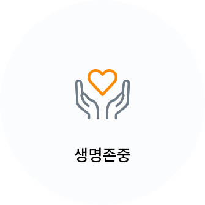
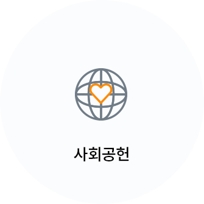
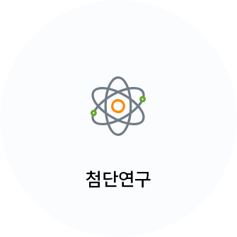
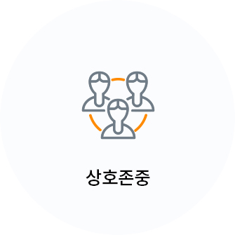
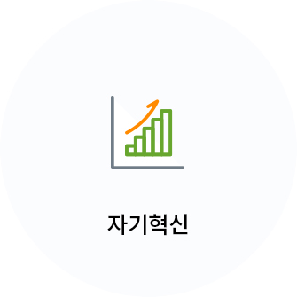
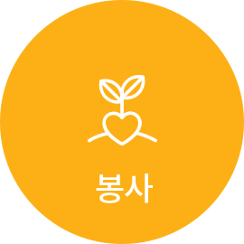

병원소개
가천대 길 병원을 소개 합니다.
 생명존중
인간생명에 대한 경외심을
최우선 가치로 한다고객중심
고객은 우리의 존재이유이며
최상의 진료서비스를 제공한다 사회공헌
인간사랑을 행동으로 실천하여
사회에 봉사한다 첨단연구
연구를 통해 건강한 생명의
연장에 기여한다 상호존중
서로 존중하며 구성원 모두가
최선의 긍지와 자부심을 갖는다 자기혁신
끊임없는 자기혁신을 통해
경쟁력을 지속적으로 유지한다
최상의 진료와 첨단 연구로
신뢰와 존경받는
21세기 최고의
고객만족병원 을 이룩한다.
가천길재단 설립이념
가천길재단은 공익을 위해 헌신하고,
어렵고 고통 받는 사람들을 돌보는
사회적 책임을 다하며,
국민을 행복하게 하는 나라사랑을 실천합니다.
박애, 봉사, 애국은 세월이 흘러도 변치 않을
가천길재단의 설립 정신입니다.
-
그늘진 곳, 소외된 삶들을 보살핍니다.
보증금 없는 병원, 새생명 찾아주기 운동 해외 심장병 어린이 무료수술, 의료 취약지 병원 운영 등으로 어려운 환경의 위태로운 생명을 사랑으로 돌봅니다. 낮은데, 외딴 삶들을 외면하지 않는 것이 길병원 정신입니다.
-
 손을 비워서 마음을 채우면 행복합니다.
봉사와 나눔이야말로 선진사회의 '소금'입니다. 가천미추홀청소년봉사단의 씩씩한 기상. '심청효행대상'에 빛나는 고결한 효성은 세상을 밝히는 마음의 등불입니다. 가천문화재단과 가천박물관이 베푸는 문화 나눔이 훈훈하고 격조 높은 21세기 문화 코리아를 열어갑니다.
-
인재양성이 나라사랑의 시작이자 끝입니다.
사람이 바로 그 공동체의 미래입니다. 글로벌 리더를 배출하고, 의료인재를 가꾸어 내는 꿈이 가천대학교의 글로벌, 메디컬 이 두 캠퍼스에 담겨있습니다. 기초과학을 연구하는 '가천뇌과학연구원', '이길여 암·당뇨연구원'은 21세기 초일류 코리아의 디딤돌입니다.